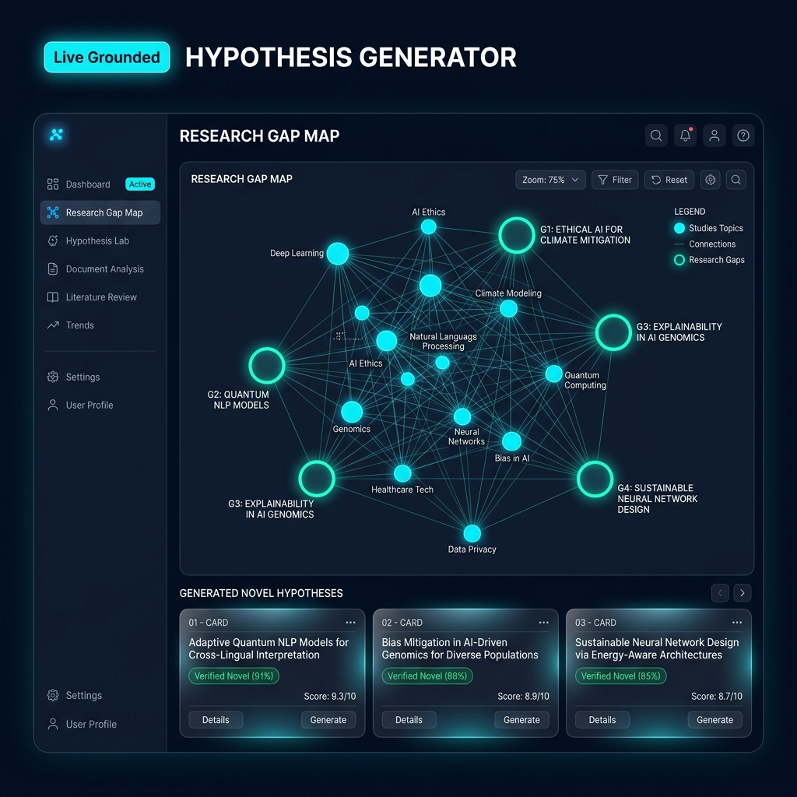

Nexus reads millions of scientific papers and tells you what to test next — not just what already exists.

Type your research topic in plain English. Nexus searches 200M+ papers using semantic understanding — not just keywords.
Nexus reads the literature, builds a coverage map of everything tested, and identifies exactly what hasn't been explored yet.
Receive ranked hypotheses with novelty scores, supporting evidence, and a full experiment blueprint — ready to run.
The only AI tool that tells you what to research next. Nexus maps the entire literature landscape, finds untested gaps, and outputs ranked hypotheses with novelty scores, rationales, and experiment hints.
Search 200M+ papers by meaning, not just keywords. Finds exactly what you need even when you don’t know the exact terminology.
Input a topic. Get a fully written, cited literature review in minutes. What used to take 4 weeks now takes 4 minutes.
Visualise your entire field as an interactive network. Studied topics as nodes, unexplored gaps as glowing empty spaces. The most-shared screenshot in academic research.
The only tool that searches biology, physics, materials science, and 20+ other fields for analogous solutions to your research question. With real published citations.
Describe your project. Get a full grant application drafted and matched to open funding calls — NIH, NSF, Wellcome Trust.
Scans hundreds of papers and surfaces studies that directly contradict each other — showing where science is still unsettled.
Start free. Upgrade when your research demands it. No contracts, cancel anytime.